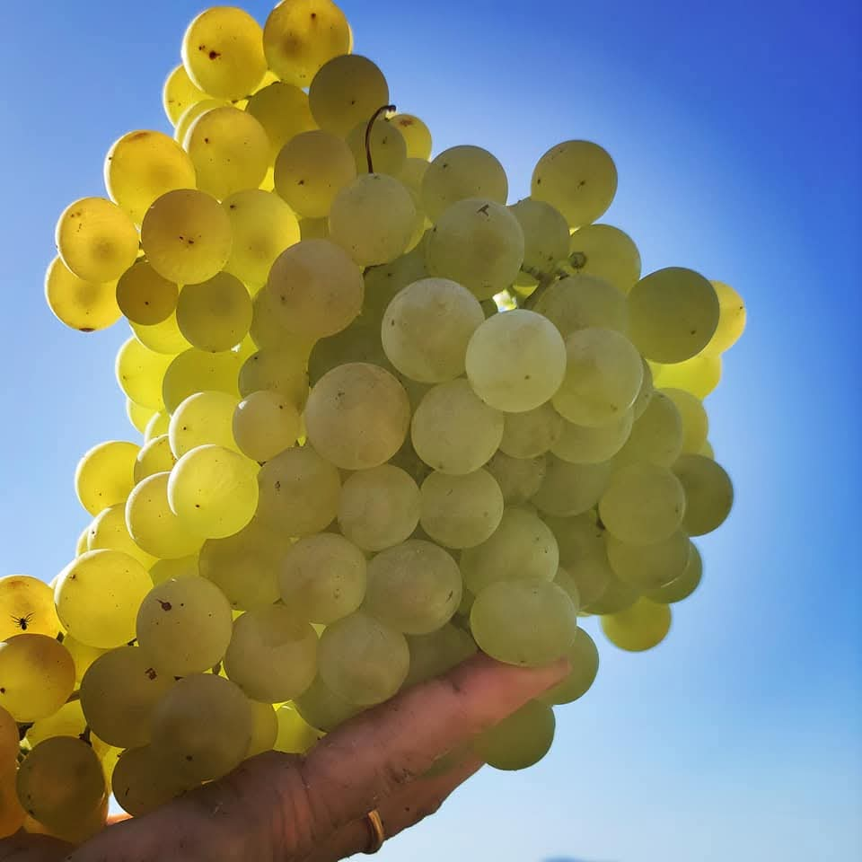

I nostri prodotti
Coltivati e lavorati con cura, seguendo i ritmi della terra e le ricette di una volta.
Pomodori e passate
Pomodori raccolti a piena maturazione e trasformati in passate dal sapore autentico.
Pesche e succhi
Pesche dolci e succose, anche in succhi e nettari genuini.
Dalla nostra terra
Frutta e ortaggi di stagione, dal campo alla tua tavola.

Chi siamo
Savia Terra nasce dall'amore per il Sud e per il lavoro nei campi. Portiamo sulle vostre tavole i sapori tipici del meridione, frutto di una terra generosa e di mani che la lavorano ogni giorno.
Crediamo in un'agricoltura rispettosa, nella stagionalità e nella qualità di prodotti semplici e genuini.
Contatti
Vuoi ordinare o avere informazioni sui nostri prodotti? Scrivici!